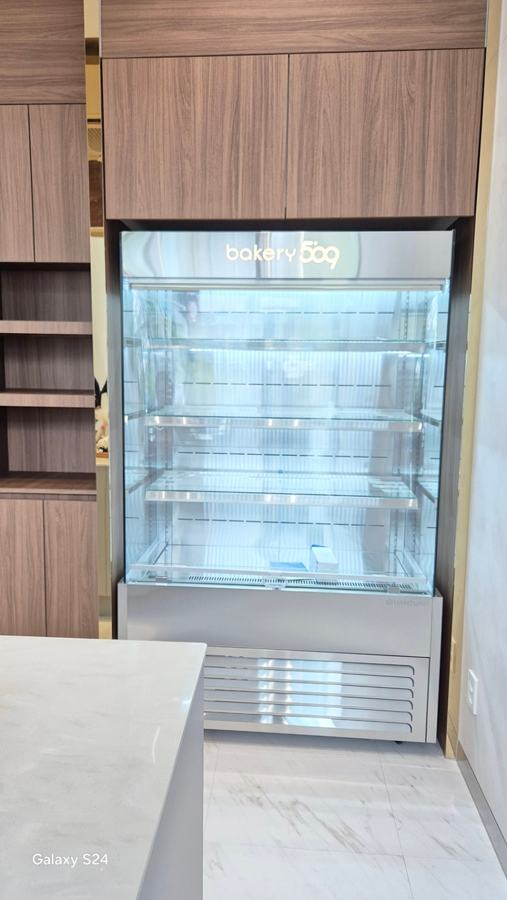
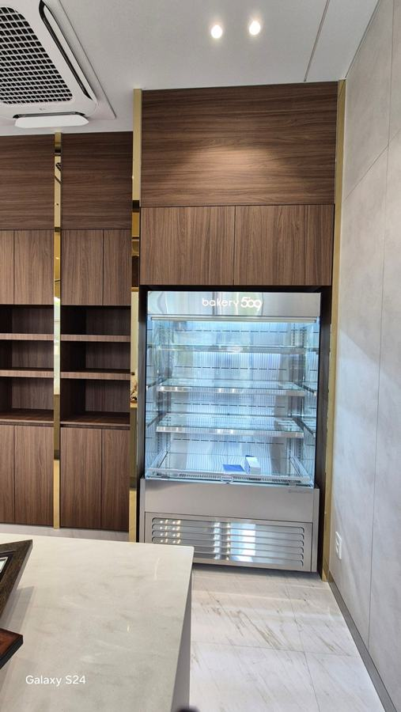
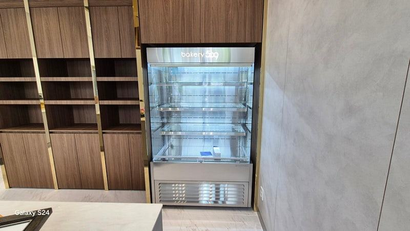
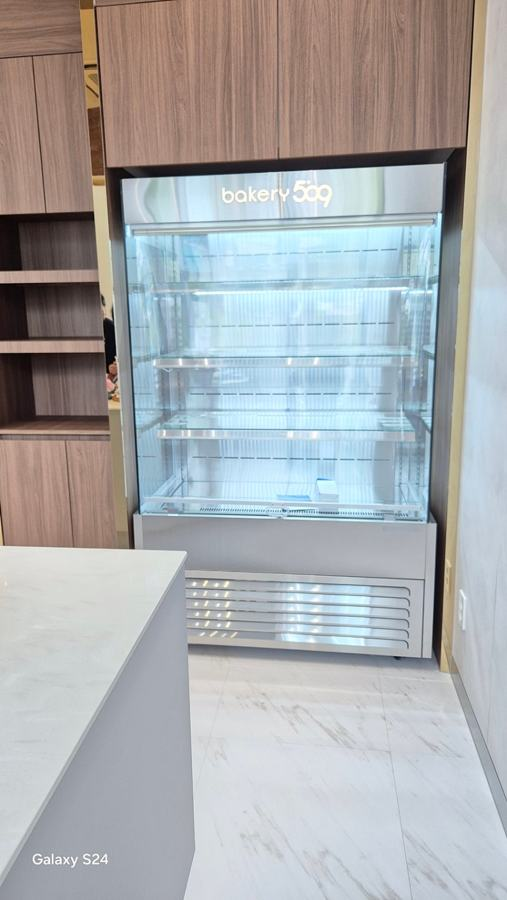
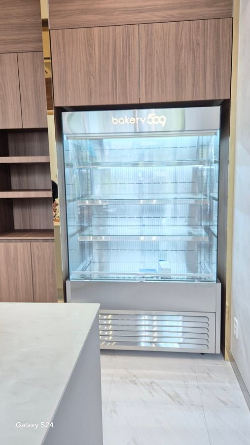
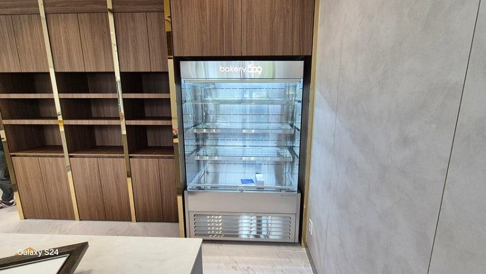
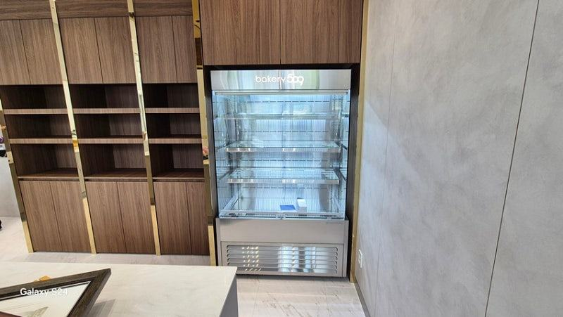
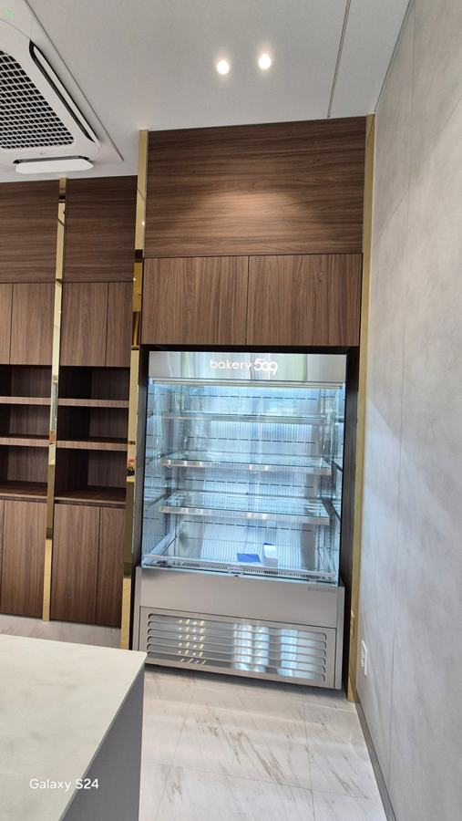
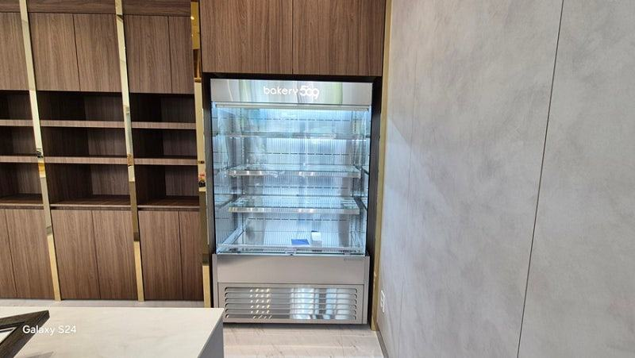

쇼케이스 이용 및 관리
오픈쇼케이스 도어형쇼케이스 차이, 판매 방식으로 고르세요

오픈쇼케이스는 문이 없어 손님이 바로 집어 갈 수 있어 회전이 빠른 상품에 유리하고, 도어형쇼케이스는 문이 냉기를 붙잡아 온도에 예민하거나 오래 두는 상품에 유리합니다. 어떤 상품을 얼마나 빨리 파는지, 영업 후 관리를 어떻게 할지를 기준으로 고르시면 됩니다.
안녕하세요. 카페, 베이커리, 편의점용 냉장 진열대를 매장에 맞춰 만드는 한성쇼케이스입니다.
쇼케이스 상담을 하다 보면 "문 있는 게 나을까요, 없는 게 나을까요?"라는 질문을 정말 자주 받습니다.
오픈형은 전기를 많이 먹는다는 이야기도 들리고, 도어형은 손님이 잘 안 연다는 이야기도 들리니 헷갈리실 수밖에 없죠.
사실 두 구조는 어느 한쪽이 더 좋다기보다 잘 맞는 상품과 매장이 다릅니다. 같은 샌드위치라도 점심시간에 한꺼번에 팔리는 매장과 하루 종일 조금씩 나가는 매장은 답이 달라집니다.
오늘은 오픈쇼케이스와 도어형쇼케이스가 실제 운영에서 어떻게 다른지, 그리고 우리 매장에는 무엇이 맞는지 판단하는 기준을 정리해 드리겠습니다.
1. 손님이 상품을 집는 방식
오픈쇼케이스는 손님이 문을 여는 한 번의 동작 없이 바로 상품을 집을 수 있습니다. 이 작은 차이가 충동구매와 회전율에 영향을 줘서, 병음료나 샐러드, 샌드위치처럼 고르는 시간이 짧은 상품에 잘 맞습니다.
도어형쇼케이스는 손님이 문을 열어야 하지만, 그 대신 유리 너머로 상품이 정돈된 모습을 보여 줍니다.
케이크나 고가 디저트처럼 진열 모양이 중요하고 손님이 신중하게 고르는 상품이라면 도어형이 어울립니다.
2. 냉기 유지와 전기 사용
오픈쇼케이스는 앞면의 에어커튼으로 냉기를 붙잡는 구조라 주변 공기의 영향을 많이 받습니다. 에어컨 바람이나 외풍이 닿는 자리라면 냉기 손실이 커지고 전기 사용도 늘어납니다.
도어형은 문이 닫혀 있는 동안 냉기가 거의 빠지지 않아 온도가 안정적입니다. 다만 손님이 문을 오래 열어 두거나 자주 여닫는 매장이라면 그만큼 온도 회복 시간이 필요합니다.
결국 전기 사용은 구조보다 자리와 사용 습관에 따라 달라지는 부분이 큽니다.
- 오픈형은 에어컨 바람이 닿지 않는 자리에 두세요.
- 도어형은 문이 완전히 닫히는지 수시로 확인하세요.


3. 냉각 방식도 함께 보세요
직냉식은 내부 냉각 파이프로 직접 온도를 낮춰 냉기 손실과 소음이 적은 편이고, 간냉식은 냉각팬으로 공기를 순환시켜 냉각 속도가 빠르고 내부 온도가 고르며 성에가 생기지 않습니다.
문이 없는 오픈형은 공기를 계속 순환시켜야 하므로 대부분 팬을 쓰는 구조로 만들고, 도어형은 상품 성격에 따라 두 방식 중에서 고를 수 있습니다.
상담 때 상품과 진열 기간을 알려 주시면 맞는 방식을 함께 정해 드립니다.
4. 영업 후 관리와 청소
오픈쇼케이스는 영업이 끝나면 나이트커버를 내려 냉기와 먼지를 막아 주는 습관이 필요합니다. 선반이 앞으로 열려 있어 청소는 수월한 편입니다.
도어형은 문을 닫아 두면 야간에도 온도가 잘 유지되지만, 유리문 손자국과 패킹 청소를 따로 챙겨야 합니다.
재질도 관리에 영향을 주는데, 물이 자주 닿는 자리라면 녹이 덜 스는 스테인리스가 편하고 일반 메탈은 상대적으로 부담이 덜한 대신 습기 관리에 신경 써야 합니다.
- 오픈형은 나이트커버 사용 여부를 확인하세요.
- 물이 자주 닿는 자리라면 재질을 먼저 정하세요.
체크리스트
- 주력 상품의 회전 속도
- 진열 모양이 중요한 상품인지
- 설치 자리의 에어컨 바람·외풍
- 직냉식·간냉식 냉각 방식
- 야간 관리 방법(나이트커버·문)
- 재질과 청소 동선
카운터 뒷벽에 매립한 카페 오픈쇼케이스 사례
화이트와 우드 톤의 따뜻한 인테리어를 가진 매장이었습니다. 카운터 뒷벽이 비어 있어 포인트가 필요했고, 디저트와 함께 병음료도 진열하고 싶다는 요청이 있어 손님이 바로 집을 수 있는 오픈쇼케이스를 제안했습니다.
선반 간격은 조정할 수 있게 설계하고, 은은한 주광색 조명과 상단 브랜드 로고 각인을 넣었습니다.
기존 진열대는 청소와 제품 교체가 번거로웠다고 하셔서 유리 선반을 탈부착으로 만들고, 결로 방지 설계와 나이트커버를 함께 적용했습니다.
입구에서 바로 보이면서 주문 대기 중에도 시선이 머무는 자리에 설치했고, 예전처럼 하루에 몇 번씩 유리를 닦지 않아도 돼 관리가 편해졌다는 말씀을 들었습니다.








| 구분 | 오픈쇼케이스 |
|---|---|
| 규격 | 1200×750×1900 |
| 조명 | 주광색 |
| 선반 | 유리 선반 3단 (탈부착) |
| 설치 방식 | 매립형 |
| 추가 옵션 | 상단 브랜드 로고 각인, 나이트커버 |
자주 묻는 질문
오픈쇼케이스는 전기세가 많이 나오지 않나요?
문이 없어 주변 공기의 영향을 받는 건 맞지만, 자리 선정과 나이트커버 사용으로 차이를 줄일 수 있습니다.
에어컨 바람이 정면으로 닿는 곳만 피해도 부담이 달라집니다.
한 매장에 오픈형과 도어형을 같이 둬도 되나요?
네, 회전이 빠른 음료·간편식은 오픈형, 케이크처럼 모양이 중요한 상품은 도어형으로 나누는 매장이 많습니다.
높이와 마감을 맞추면 한 세트처럼 보이게 만들 수 있습니다.
도어형은 손님이 잘 안 열지 않나요?
문 손잡이 위치와 유리 투명도, 조명에 따라 손이 가는 정도가 달라집니다. 상품이 잘 보이도록 결로 방지 유리와 조명을 함께 챙기시길 권해 드립니다.
매장 조건에 맞춰 만드는 한성쇼케이스
원하시는 제품 사진과 설치할 공간 사진만 보내 주셔도 매장에 맞는 구성을 추천해 드립니다.
- 전국 240여 개 A/S 전담 센터 운영
- 본사 대량 자재 매입으로 품질 대비 합리적인 가격
- 유럽제·삼성 냉각 콤프레셔 적용
- 국내 최초 쇼케이스 전문 디자이너 상주
매장 폭과 원하는 진열 구성을 알려 주세요. 실측과 견적을 안내해 드립니다.
031-986-2458